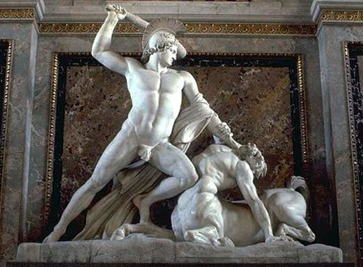

Như trên đã kể, Pirithoos cai quản những người Lapithes ở vùng Thessalie. Chàng mưu toan thử sức với Thésée, nhưng rồi quy thuận, xin kết nghĩa anh em, thề trước thần thánh, trời đất, sống chết có nhau.
Bữa kia, Pirithoos mời Thésée đến xứ sở của mình để dự tiệc cưới. Pirithoos cưới Hippodamie, con gái của lão vương Adraste, nổi danh là một thiếu nữ nhan sắc. Đã có nhiều chàng trai ngỏ ý cầu hôn với nàng nhưng nàng chỉ cảm phục và ưng thuận người anh hùng Pirithoos. Tiệc cưới rất linh đình. Ngoài các vương tôn, công tử khắp nơi theo lời mời đến dự tiệc còn có cả những vị khách Centaure. Vì sao bữa tiệc cưới thanh lịch và trọng thể, toàn những vị khách cao quý như thế, Pirithoos lại cho mời những vị khách nửa người nửa ngựa hình thù gớm ghiếc, tính nết thô bạo đến dự? Đó là vì Pirithoos vốn là anh em cùng bố khác mẹ với giống Centaure. Cha của chàng là Ixion, người đã bị thần Zeus trừng phạt vì tội phạm thượng, mưu toan tằng tịu với Héra. Thần Zeus đã biến một đám mây thành một người đàn bà giống như Héra. Ixion mất trí ái ân với đám mây đó nên mới sinh ra lũ Centaure nửa người nửa ngựa, hoang đã, man rợ. Vì có quan hệ máu mủ như thế nên những Centaure thường hay gây hấn, đòi Pirithoos phải trao lại vương quyền cho chúng, nhưng chàng không nghe và đã tìm mọi cách để thuyết phục những người anh em Centaure hoang dã của mình, và trong bữa tiệc cưới này, Pirithoos mời chúng đến dự cũng là một cách để tạo mối hòa khí đặng lựa lời khuyên giải chúng. Tân khách đến dự rất đông, đông lắm, đến nỗi các phòng trong cung điện đều dùng để tiếp khách mà vẫn không đủ chỗ. Một số vị khách phải nằm nghỉ ngay trên nền nhà. Còn tiệc thì ngoài những bàn trong cung điện, gia chủ còn phải bày thêm nhiều bàn nữa ở trong một cái hang đá to. Chẳng cần phải nói nhiều lời chúng ta cũng biết, bữa tiệc cưới này ồn ào phong phú như thế nào. Rượu từ các vò, các thùng tuôn chảy như suối. Thịt các giống vật, thú rừng nướng quay trên những bếp than hồng thơm ngào ngạt, bóng nhẫy. Tiếng đàn ca hòa với nhịp chân nhảy múa, tưng bừng rộn rã. Cô dâu và chú rể bước ra trong tiếng tung hô, chúc tụng tràn ngập niềm hứng khởi. Mọi người đều trầm trồ khen ngợi và ngây ngất trước sắc đẹp lộng lẫy của cô dâu.
Cảnh tiệc đang vui bỗng đâu một con Centaure gạt mạnh mọi người xông đến chỗ cô dâu. Nó nhảy phắt lên bàn tiệc vươn đôi tay dài gớm ghiếc ra ôm chặt lấy cô dâu rồi cắm đầu chạy. Tiếng la hét hãi hùng, tiếng quát tháo hoảng loạn nổi lên như chim vỡ tổ. Cùng lúc đó, bọn Centaure cũng tràn vào đám khách, gạt băng nam giới ra một bên và cướp phụ nữ. Bữa tiệc biến thành xung đột. Các anh hùng Lapithes tay không giao đấu với lũ Centaure. Thésée cùng Pirithoos vừa đánh vừa kêu gọi mọi người đừng để một tên Centaure nào chạy thoát. Mọi người quay lại dùng đủ mọi thứ để giao đấu. Từ vò rượu đến cốc vại, bàn ghế... Vì theo phong tục thuở ấy, phàm đã đi dự tiệc thì bất kể ai cũng phải để vũ khí ở bên ngoài. Vì thế các anh hùng dũng sĩ phải chiến đấu vất vả mới dồn được lũ Centaure ra một góc để đánh bật chúng ra ngoài. Ở bên ngoài một số tráng sĩ có vũ khí đánh rất mạnh, và khi mọi người đã thoát ra khỏi phòng tiệc thì, thật sung sướng họ nhanh chóng cầm lấy vũ khí và tiếp tục tấn công. Những mũi tên sắc nhọn tẩm độc, những ngọn lao bay đi vun vút, cắm liên tiếp vào người lũ Centaure. Chúng đau đớn kêu la khủng khiếp. Xác chúng chết đổ xuống đó đây nếu đem dồn chất lại thì có thể cao như ngọn đồi. Cuối cùng lũ Centaure phải tháo chạy lên ngọn núi Pélion cao ngất mới thoát khỏi bị truy đuổi. Những người Lapithes đã từ thế yếu chuyển thành mạnh đánh thắng một trận oanh liệt, giành lại được nàng Hippodamie cho Pirithoos. Trong số những chiến sĩ kiệt xuất về phía khách, ta phải kể trước hết là Thésée, còn về phía chủ thì không ai vượt được tài năng của hai người anh hùng Pirithoos và Pélée.
Cuộc giao tranh của những người Lapithes đối với lũ Centaure nửa người nửa ngựa chính là sự thắng lợi của văn minh đối với hoang dã, man rợ. Nó phản ánh bước chuyển biến quá độ của xã hội Hy Lạp từ dã man tiến dần đến văn minh, từ tình trạng hoang dại của chế độ thị tộc mẫu quyền tiến tới cuộc sống có văn hóa, và hiện tượng đó đã phản ánh vào trong loại huyền thoại anh hùng, một sản phẩm của chế độ phụ quyền.

Thésée giết Xăngtor Biênôr
Thật không may, nàng Hippodamie, người vợ trẻ đẹp của Pirithoos, có cuộc đời thật ngắn ngủi. Nàng sống với người chồng anh hùng của mình chẳng được bao lâu đã lâm bệnh qua đời, để lại một nỗi thương tiếc khôn nguôi cho Pirithoos. Nhưng rồi thời gian trôi đi, Pirithoos phải nghĩ đến việc lấy vợ. Chàng xuống Athènes gặp Thésée để bàn tính chuyện đại sự. Hồi đó ở vùng Laconie187, một vùng ở mạn cực nam của bán đảo Péloponnèse có một người thiều nữ tên là Hélène cực kỳ xinh đẹp. Nàng là con của thần Zeus và công chúa Léda. Thần Zeus cảm xúc trước sắc đẹp của Léda đã biến mình thành một con thiên nga (có người bảo là con ngỗng) đến ái ân với nàng. Khi ấy Léda đã có chồng. Chồng nàng là Tyndare vốn là cháu ngoại của Persée. Nhẽ ra Tyndare được thừa kế ngai vàng của vua cha trị vì đô thành Sparte nhưng tên Hippocoon lợi dụng lúc nhà vua già yếu dùng vũ lực chiếm ngôi đuổi hai anh em Tyndare và Icarios ra khỏi đất Sparte. Tyndare đến xứ Élis xin nhà vua Thestios cho cư ngụ. Thương cảm số phận bất hạnh của chàng trai, nhà vua gả con gái mình, công chúa Léda cho Tyndare.
Cuộc tình duyên giữa Zeus và Léda sinh ra một người con... Không phải! Vì Zeus dưới dạng con thiên nga nên Léda phải sinh ra một quả trứng, và từ quả trứng này đã nở ra một gái và một trai: gái tên gọi là Hélène, trai tên gọi là Pollux.
Vào lúc Pirithoos bàn chuyện đại sự với Thésée thì Tyndare đã khôi phục được quyền thế ở Sparte. Người anh hùng Héraclès đã giúp Tyndare trong sự nghiệp này, kết quả của việc bàn chuyện đại sự giữa hai chàng trai của đất Thessalie và đất Attique là: cướp Hélène. Lợi dụng dịp lễ nữ thần Artémis, hai chàng trai đột nhập vào đoàn các thiếu nữ đang nhảy múa, bắt cóc Hélène. Họ đưa nàng về giấu ở đô thành Athènes. Nhưng công bắt thì chung cả hai người, vậy thì nàng thuộc về ai? Thésée và Pirithoos đã thỏa thuận với nhau trước, sẽ rút thăm để cho công bằng. Thésée trúng, Hélène thuộc về chàng, nhưng vì tình anh em kết nghĩa, Thésée phải giúp Pirithoos tìm vợ, và chàng Pirithoos này nảy ra ý định xuống âm phủ bắt cóc Perséphone. Thật là kỳ quặc và coi trời bằng vung! Nhưng Thésée không thể từ chối được. Chàng đã cam kết và thề hứa bằng mối tình bạn thiêng liêng và chân thành. Lẽ nào chàng được Hélène rồi mà đến lúc bạn chàng muốn có Perséphone, chàng lại không giúp đỡ? Thế là đôi bạn mở cuộc hành trình xuống vương quốc của thần Hadès. Chẳng hiểu họ dùng cách nào mà vượt qua được những con sông Achéron, Styx và được lão lái đò lạnh lùng và nghiêm khắc Charon chở cho qua, vào được cung điện của thần Hadès, họ đến đứng trước mặt hai vị thần và bằng lời lẽ ngạo mạn, họ đòi Hadès trao cho họ nàng Perséphone xinh đẹp. Thần Hadès tức giận đến bầm gan tím ruột nhưng thần kềm hãm được cơn thịnh nộ. Thần tỏ vẻ vui mừng vì được tiếp hai vị anh hùng của mình. Thần ân cần mời hai vị khách quý ngồi xuống hai chiếc ghế đá ở lối đi vào vương quốc nghỉ ngơi rồi dự tiệc khoản đãi, nhưng khi hai vị anh hùng vừa ngồi xuống chiếc ghế đó thì không sao đứng dậy được nữa. Xiềng xích từ đâu bung ra trói chặt hai người lại. Đó là hai chiếc ghế Lãng quên: một vũ khí vô cùng lợi hại của Hadès. Sau này nhờ người anh hùng Héraclès giải thoát, Thésée mới trở lại được thế giới của ánh sáng mặt trời, còn Pirithoos, các thần bắt phải chịu đời đời sống dưới vương quốc của Hadès tối tăm, mù mịt.
187 Đặc điểm của phong cách nghệ thuật vùng Laconie là giản dị, hàm súc, rõ ràng cho nên ngày nay có danh từ laconisme và tính từ laconique để chỉ một phong cách giản dị, hàm súc.